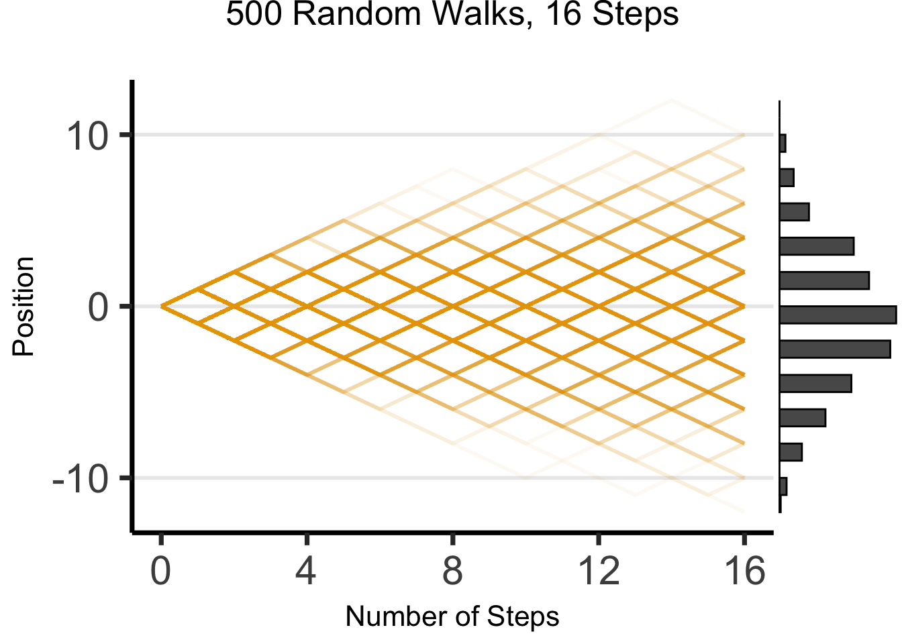
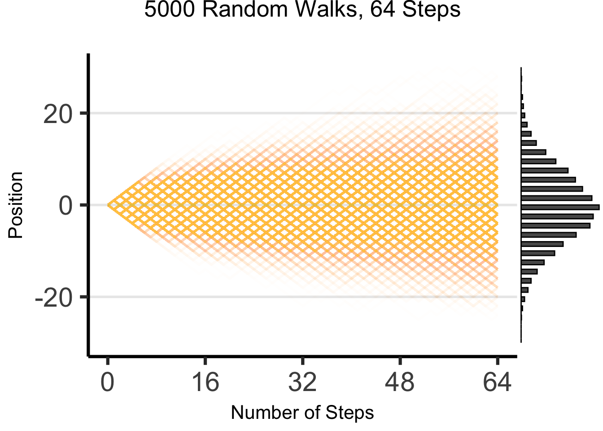
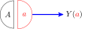

# For slides
library(ggplot2)
cbPalette <- c("#E69F00", "#56B4E9", "#009E73", "#F0E442", "#0072B2", "#D55E00", "#CC79A7")
options(ggplot2.discrete.colour = cbPalette)
# Theme generator, for given sizes
theme_dsan <- function(plot_type = "full") {
if (plot_type == "full") {
custom_base_size <- 16
} else if (plot_type == "half") {
custom_base_size <- 22
} else if (plot_type == "quarter") {
custom_base_size <- 28
} else {
# plot_type == "col"
custom_base_size <- 22
}
theme <- theme_classic(base_size = custom_base_size) +
theme(
plot.title = element_text(hjust = 0.5),
plot.subtitle = element_text(hjust = 0.5),
legend.title = element_text(hjust = 0.5),
legend.box.background = element_rect(colour = "black")
)
return(theme)
}
knitr::opts_chunk$set(fig.align = "center")
g_pointsize <- 5
g_linesize <- 1
# Technically it should always be linewidth
g_linewidth <- 1
g_textsize <- 14
remove_legend_title <- function() {
return(theme(
legend.title = element_blank(),
legend.spacing.y = unit(0, "mm")
))
}Week 6: Causality in Ethics and Policy
DSAN 5450: Data Ethics and Policy
Spring 2026, Georgetown University
Class Sessions
Schedule
Today’s Planned Schedule:
| Start | End | Topic | |
|---|---|---|---|
| Lecture | 3:30pm | 3:45pm | Recaps / Clarifications → |
| 3:45pm | 4:00pm | Determinism \(\rightarrow\) Probability \(\rightarrow\) Causality → | |
| 4:00pm | 4:30pm | Fundamental Problem of Causal Inference → | |
| 4:30pm | 5:00pm | Do-Calculus → | |
| Break! | 5:00pm | 5:10pm | |
| 5:10pm | 6:00pm | Chalkboard Lab: DAGs for Colliders → |
Quick Clarifications / Recaps!
Clarification: Ecological Inference
- I gave the worst example for this: generalizing from population to single person (white people \(\rightarrow\) Jeff)!
- As Trey helpfully pointed out, this is the “obvious” fallacy of stereotyping a person based on group membership
- In reality, the “ecological fallacy” is more subtly (but just as fallacious-ly) committed from aggregate to slightly-less-aggregate populations!
- Example: DC Public Schools vs. Jackson-Reed
Eureka Moment (for Midterm Prep Purposes)
- I totally forgot to mention: John Stuart Mill, the progenitor of what we today identify as utilitarianism, was himself tortured mercilessly, by his father John Mill (bffs with Jeremy Bentham) for the “greater good of society”!

Blasting Off Into Causality!

DGPs and the Emergence of Order
- Who can guess the state of this process after 10 steps, with 1 person?
- 10 people? 50? 100? (If they find themselves on the same spot, they stand on each other’s heads)
- 100 steps? 1000?

The Result: 16 Steps
Code
library(tibble)
library(ggplot2)
library(ggExtra)
library(dplyr)
Attaching package: 'dplyr'The following objects are masked from 'package:stats':
filter, lagThe following objects are masked from 'package:base':
intersect, setdiff, setequal, unionCode
library(tidyr)
# From McElreath!
gen_histo <- function(reps, num_steps) {
support <- c(-1,1)
pos <-replicate(reps, sum(sample(support,num_steps,replace=TRUE,prob=c(0.5,0.5))))
#print(mean(pos))
#print(var(pos))
pos_df <- tibble(x=pos)
clt_distr <- function(x) dnorm(x, 0, sqrt(num_steps))
plot <- ggplot(pos_df, aes(x=x)) +
geom_histogram(aes(y = after_stat(density)), fill=cbPalette[1], binwidth = 2) +
stat_function(fun = clt_distr) +
theme_dsan("quarter") +
theme(title=element_text(size=16)) +
labs(
title=paste0(reps," Random Walks, ",num_steps," Steps")
)
return(plot)
}
gen_walkplot <- function(num_people, num_steps, opacity=0.15) {
support <- c(-1, 1)
# Unique id for each person
pid <- seq(1, num_people)
pid_tib <- tibble(pid)
pos_df <- tibble()
end_df <- tibble()
all_steps <- t(replicate(num_people, sample(support, num_steps, replace = TRUE, prob = c(0.5, 0.5))))
csums <- t(apply(all_steps, 1, cumsum))
csums <- cbind(0, csums)
# Last col is the ending positions
ending_pos <- csums[, dim(csums)[2]]
end_tib <- tibble(pid = seq(1, num_people), endpos = ending_pos, x = num_steps)
# Now convert to tibble
ctib <- as_tibble(csums, name_repair = "none")
merged_tib <- bind_cols(pid_tib, ctib)
long_tib <- merged_tib %>% pivot_longer(!pid)
# Convert name -> step_num
long_tib <- long_tib %>% mutate(step_num = strtoi(gsub("V", "", name)) - 1)
# print(end_df)
grid_color <- rgb(0, 0, 0, 0.1)
# And plot!
walkplot <- ggplot(
long_tib,
aes(
x = step_num,
y = value,
group = pid,
# color=factor(label)
)
) +
geom_line(linewidth = g_linesize, alpha = opacity, color = cbPalette[1]) +
geom_point(data = end_tib, aes(x = x, y = endpos), alpha = 0) +
scale_x_continuous(breaks = seq(0, num_steps, num_steps / 4)) +
scale_y_continuous(breaks = seq(-20, 20, 10)) +
theme_dsan("quarter") +
theme(
legend.position = "none",
title = element_text(size = 16)
) +
theme(
panel.grid.major.y = element_line(color = grid_color, linewidth = 1, linetype = 1)
) +
labs(
title = paste0(num_people, " Random Walks, ", num_steps, " Steps"),
x = "Number of Steps",
y = "Position"
)
}
wp1 <- gen_walkplot(500, 16, 0.05)Warning: The `x` argument of `as_tibble.matrix()` must have unique column names if
`.name_repair` is omitted as of tibble 2.0.0.
ℹ Using compatibility `.name_repair`.Code
ggMarginal(wp1, margins = "y", type = "histogram", yparams = list(binwidth = 1))
The Result: 64 Steps
Code
library(ggExtra)
wp2 <- gen_walkplot(5000,64,0.008) +
ylim(-30,30)Scale for y is already present.
Adding another scale for y, which will replace the existing scale.Code
ggMarginal(wp2, margins = "y", type = "histogram", yparams = list(binwidth = 1))
“Mathematical/Scientific Modeling”
- Thing we observe (poking out of water): data
- Hidden but possibly discoverable through deeper investigation (ecosystem under surface): model / DGP

So What’s the Problem?
- Non-probabilistic models: High potential for being garbage
- tldr: even if SUPER certain, using \(\Pr(\mathcal{H}) = 1-\varepsilon\) with tiny \(\varepsilon\) has literal life-saving advantages (Finetti 1972)
- Probabilistic models: Getting there, still looking at “surface”
- Of the \(N = 100\) times we observed event \(X\) occurring, event \(Y\) also occurred \(90\) of those times
- \(\implies \Pr(Y \mid X) = \frac{\#[X, Y]}{\#[X]} = \frac{90}{100} = 0.9\)
- Causal models: Does \(Y\) happen because of \(X\) happening? For that, need to start modeling what’s happening under the surface making \(X\) and \(Y\) “pop up” together so often
Causal Inference
The Intuitive But Boring Problem of Causal Inference
library(dplyr)
library(ggplot2)
ga_lawyers <- c(21362, 22254, 23134, 23698, 24367, 24930, 25632, 26459, 27227, 27457)
ski_df <- tibble::tribble(
~year, ~varname, ~value,
2000, "ski_revenue", 1551,
2001, "ski_revenue", 1635,
2002, "ski_revenue", 1801,
2003, "ski_revenue", 1827,
2004, "ski_revenue", 1956,
2005, "ski_revenue", 1989,
2006, "ski_revenue", 2178,
2007, "ski_revenue", 2257,
2008, "ski_revenue", 2476,
2009, "ski_revenue", 2438,
)
ski_mean <- mean(ski_df$value)
ski_sd <- sd(ski_df$value)
ski_df <- ski_df %>% mutate(val_scaled = 12*value, val_norm = (value - ski_mean)/ski_sd)
law_df <- tibble::tibble(year=2000:2009, varname="ga_lawyers", value=ga_lawyers)
law_mean <- mean(law_df$value)
law_sd <- sd(law_df$value)
law_df <- law_df %>% mutate(val_norm = (value - law_mean)/law_sd)
spur_df <- dplyr::bind_rows(ski_df, law_df)
ggplot(spur_df, aes(x=year, y=val_norm, color=factor(varname, labels = c("Ski Revenue","Lawyers in Georgia")))) +
stat_smooth(method="loess", se=FALSE) +
geom_point(size=g_pointsize/1.5) +
labs(
fill="",
title="Ski Revenue vs. Georgia Lawyers",
x="Year",
color="Correlation: 99.2%",
linetype=NULL
) +
theme_dsan() +
scale_x_continuous(
breaks=seq(from=2000, to=2014, by=2)
) +
#scale_y_continuous(
# name="Total Revenue, Ski Facilities (Million USD)",
# sec.axis = sec_axis(~ . * law_sd + law_mean, name = "Number of Lawyers in Georgia")
#) +
scale_y_continuous(breaks = -1:1,
labels = ~ . * round(ski_sd,1) + round(ski_mean,1),
name="Total Revenue, Ski Facilities (Million USD)",
sec.axis = sec_axis(~ . * law_sd + law_mean, name = "Number of Lawyers in Georgia")) +
expand_limits(x=2010) +
#geom_hline(aes(yintercept=x, color="Mean Values"), as.data.frame(list(x=0)), linewidth=0.75, alpha=1.0, show.legend = TRUE) +
scale_color_manual(
breaks=c('Ski Revenue', 'Lawyers in Georgia'),
values=c('Ski Revenue'=cbPalette[1], 'Lawyers in Georgia'=cbPalette[2])
)`geom_smooth()` using formula = 'y ~ x'
cor(ski_df$value, law_df$value)[1] 0.9921178(Based on Spurious Correlations, Tyler Vigen)
- This, however, is only a mini-boss. Beyond it lies the truly invincible FINAL BOSS… 🙀
The Fundamental Problem of Causal Inference
The only workable definition of “\(X\) causes \(Y\)”:
- The problem? We live in one world, not two identical worlds simultaneously 😭
What Is To Be Done?

Face Everything And Rise: Controlled, Randomized Experiment Paradigm
- Find good comparison cases: Treatment and Control
- Without a control group, you cannot make inferences!
- Selecting on the dependent variable…
Selecting on the Dependent Variable
- Jeff’s ABHYSIOWDCI claim: If we care about intervening to reduce social ills, this literally has negative value (Goes up to zero value if you don’t publish it though! 😉)
(Annoying But Hopefully You’ll See the Importance Once We Digest Causal Inference… a standard term in The Sciences)
Complications: Selection
- Tldr: Why did this person (unit) end up in the treatment group? Why did this other person (unit) end up in the control group?
- Are there systematic differences?
- “““Vietnam”“” “““War”“” Draft: Why can’t we just study [men who join the military] versus [men who don’t], and take the difference as a causal estimate?
The Solution: Matching
(W02 we looked at propensity score matching… kind of the Naïve Bayes of matching)
- Controlled experiment: we can ensure (since we have control over the assignment mechanism) the only systematic difference between \(C\) and \(T\) is: \(T\) received treatment, \(C\) did not
- In an observational study, we’re “too late”! Thus, we no longer refer to assignment but to selection
- Our job is to reverse engineer the selection mechanism, then correct for its non-randomness. Spoiler: “transform” observational \(\rightarrow\) experimental via weighting.
- That’s the gold at end of rainbow. The rainbow itself is…
Do-Calculus
Our Data-Generating Process
- \(Y\): Future success, \(\mathcal{R}_Y = \{0, 1\}\)
- \(E\): Private school education, \(\mathcal{R}_E = \{0, 1\}\)
- \(V\): Born into poverty, \(\mathcal{R}_V = \{0, 1\}\)
NoteThe Private School \(\leadsto\) Success Pipeline 🤑
- Sample independent RVs \(U_1 \sim \mathcal{B}(1/2)\), \(U_2 \sim \mathcal{B}(1/3)\), \(U_3 \sim \mathcal{B}(1/3)\)
- \(V \leftarrow U_1\)
- \(E \leftarrow \textsf{if }(V = 1)\textsf{ then } 0\textsf{ else }U_2\)
- \(Y \leftarrow \textsf{if }(V = 1)\textsf{ then }0\textsf{ else }U_3\)
Chalkboard Time…
- \(\Pr(Y = 1) = \; ?\)
- \(\Pr(Y = 1 \mid E = 1) = \; ?\)

Top Secret Answers Slide (Don’t Peek)
- \(\Pr(Y = 1) = \frac{1}{6}\)
- \(\Pr(Y = 1 \mid E = 1) = \frac{1}{3}\)
- \(\overset{✅}{\implies}\) One out of every three private-school graduates is successful, vs. one out of every six graduates overall
- \(\overset{❓}{\implies}\) Private school doubles likelihood of success!
- Latter is only true if intervening/changing/doing \(E = 0 \leadsto E = 1\) is what moves \(\Pr(Y = 1)\) from \(\frac{1}{6}\) to \(\frac{1}{3}\)!
Chalkboard Time 2: Electric Boogaloo
- \(\Pr(Y = 1) = \frac{1}{6}\)
- \(\Pr(Y = 1 \mid E = 1) = \frac{1}{3}\)
- \(\Pr(Y = 1 \mid \textsf{do}(E = 1)) = \; ?\)
- Here, \(\textsf{do}(E = 1)\) means diving into the DGP below the surface and changing it so \(E = 1\)… Setting \(E\) to be \(1\)
Note\(\text{DGP}(Y \mid \textsf{do}(E = 1))\)
- Sample independent RVs \(U_1 \sim \mathcal{B}(1/2)\), \(U_2 \sim \mathcal{B}(1/3)\), \(U_3 \sim \mathcal{B}(1/3)\)
- \(V \leftarrow U_1\)
- \(E \leftarrow \textsf{if }(V = 1)\textsf{ then } 0\textsf{ else }U_2\)
- \(Y \leftarrow \textsf{if }(V = 1)\textsf{ then }0\textsf{ else }U_3\)
Double Quadruple Secret Answer Slide
- \(\Pr(Y = 1) = \frac{1}{6}\)
- \(\Pr(Y = 1 \mid E = 1) = \frac{1}{3}\)
- \(\Pr(Y = 1 \mid \textsf{do}(E = 1)) = \frac{1}{6}\)
- The takeaway:
- \(\Pr(Y = 1 \mid E = 1) < \Pr(Y = 1)\), but
- \(\Pr(Y = 1 \mid \textsf{do}(E = 1)) = \Pr(Y = 1)\)
The Problem of Colliders
- \(X\) and \(Y\) are diseases which occur independently, no interrelationship, with probability \(1/3\)
- Either \(X\) or \(Y\) sufficient for admission to hospital, \(Z\)
- We have: \(X \rightarrow Z \leftarrow Y\) [🚨 Collider alert!]
What’s the Issue?
If we only have data on patients (\(Z = 1\)), observing \(X = 1\) lowers \(\Pr(Y = 1)\), despite the fact that \(X \perp Y\)!
\(X \perp Y\), but \((X \not\perp Y) \mid Z\)
The moral: controlling for stuff does not necessarily solve problem of causal inference, and can actually make it worse (inducing correlations where they don’t actually exist) 😭


The Causal Trinity: When Controlling for Stuff Helps
- Fork: Controlling helps!
- Confounder: Controlling helps!
- Collider: Controlling makes things worse 😞
The Final Diagrammatic Boss: SWIGs
- Single World Intervention Graphs


References
Finetti, Bruno de. 1972. Probability, Induction and Statistics: The Art of Guessing. J. Wiley. https://books.google.com?id=hENg7qRPOPYC.
Hume, David. 1739. A Treatise of Human Nature: Being an Attempt to Introduce the Experimental Method of Reasoning Into Moral Subjects; and Dialogues Concerning Natural Religion. Longmans, Green.